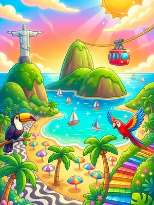
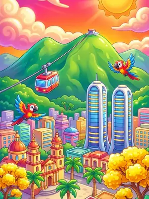
ChapterCapítulo 1
South AmericaSudamérica
MontevideoMontevideo → CaracasCaracas
Every Trip Sort level moves you along one real route. It starts in Montevideo, crosses every continent by plane, ferry, bus and train, and ends in Stanley (Islas Malvinas). Here is the whole trip, stop by stop, on the game's own map.Cada nivel de Trip Sort te avanza en una ruta real. Arranca en Montevideo, cruza todos los continentes en avión, ferry, bus y tren, y termina en Puerto Argentino (Islas Malvinas). Acá está el viaje entero, parada por parada, en el mismo mapa del juego.
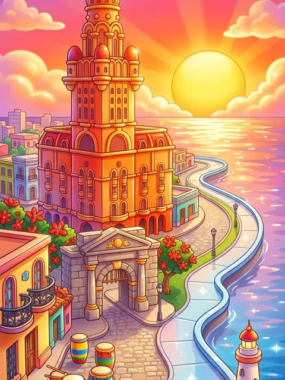
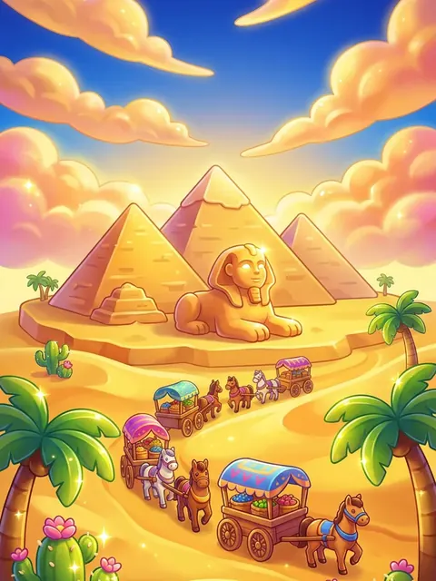
The mapEl mapa
The traveler goes round the route on its own, with the same vehicle the game uses for every leg. Drag and zoom the map, search for a city, or tap any stop to see its postcard.El viajero recorre la ruta solo, en el mismo vehículo que usa el juego en cada tramo. Arrastrá y hacé zoom en el mapa, buscá una ciudad o tocá cualquier parada para ver su postal.
The route starts in Montevideo (red pin) and ends in Stanley (Islas Malvinas) (gold pin). Gold pins mark where each chapter begins.La ruta arranca en Montevideo (pin rojo) y termina en Puerto Argentino (Islas Malvinas) (pin dorado). Los pines dorados marcan dónde empieza cada capítulo.
How you get thereCómo se viaja
After the twelfth level of a city, a little trip takes you to the next one. Short hops go by bus or train, islands by ferry, and the long ones by plane.Después del nivel doce de cada ciudad, un viajecito te lleva a la siguiente. Los tramos cortos van en bus o tren, las islas en ferry y los largos en avión.
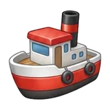
27ferry crossingscruces en ferryThe chaptersLos capítulos
The trip is split into regions. Open a chapter to see every stop and its levels, or show it on the map.El viaje se divide en regiones. Abrí un capítulo para ver cada parada con sus niveles, o mostralo en el mapa.


ChapterCapítulo 1
MontevideoMontevideo → CaracasCaracas
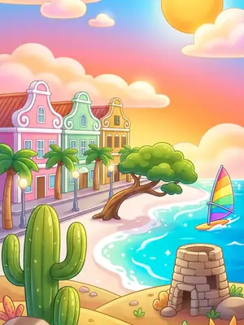
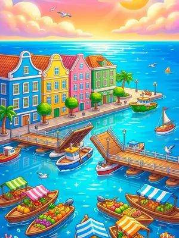
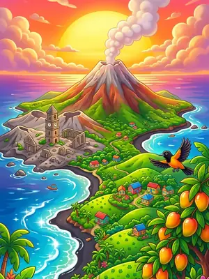
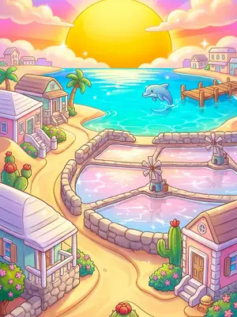
ChapterCapítulo 2
OranjestadOranjestad → Cockburn TownCockburn Town
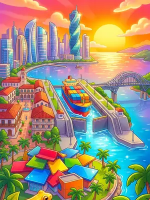
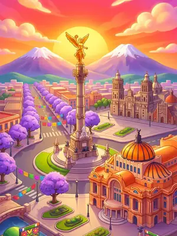
ChapterCapítulo 3
Panama CityCiudad de Panamá → Ciudad de MéxicoCiudad de México
ChapterCapítulo 4
WashingtonWashington → AnchorageAnchorage
ChapterCapítulo 5
SapporoSapporo → BeijingPekín
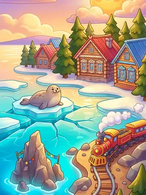
ChapterCapítulo 6
UlaanbaatarUlán Bator → VladivostokVladivostok
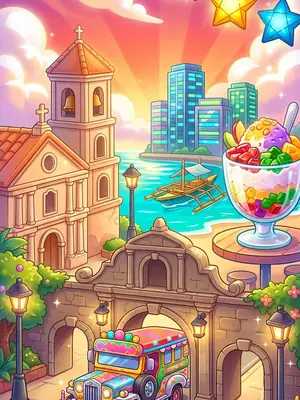
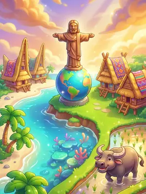
ChapterCapítulo 7
ManilaManila → DiliDili
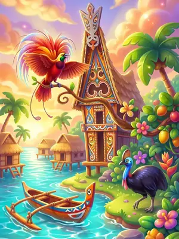
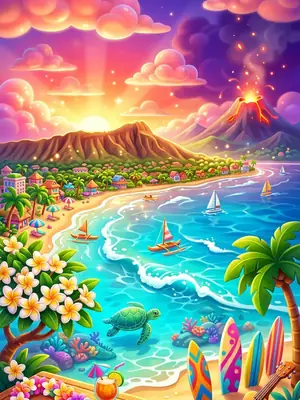
ChapterCapítulo 8
Port MoresbyPort Moresby → HonoluluHonolulu
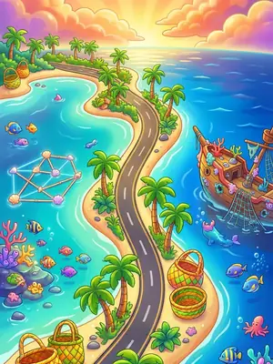
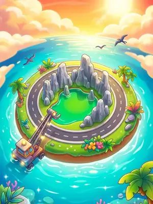
ChapterCapítulo 9
MajuroMajuro → KororKoror
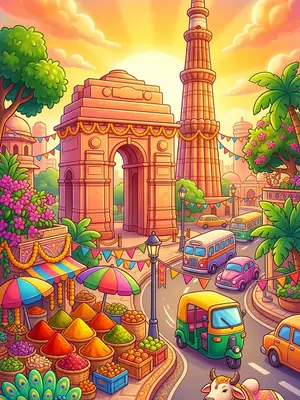
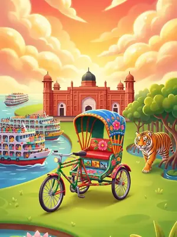
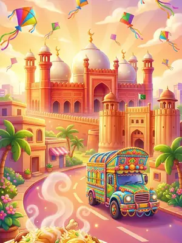
ChapterCapítulo 10
DelhiDelhi → LahoreLahore
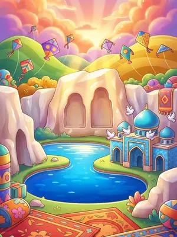
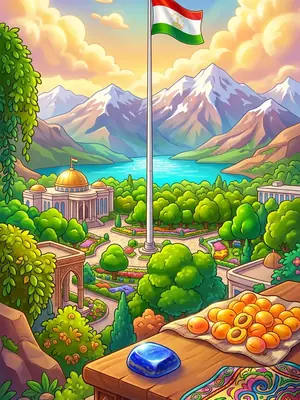
ChapterCapítulo 11
KabulKabul → DushanbeDusambé
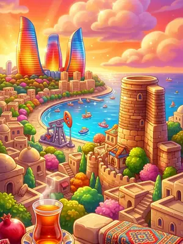
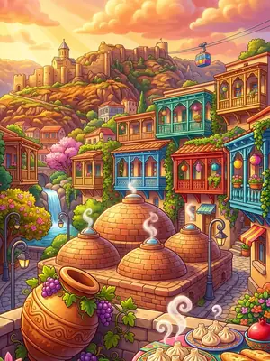
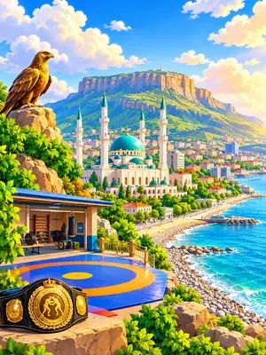
ChapterCapítulo 12
BakuBakú → MakhachkalaMajachkalá
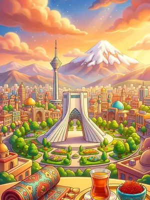
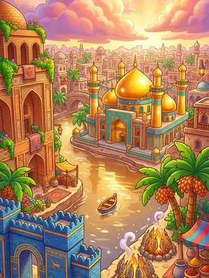
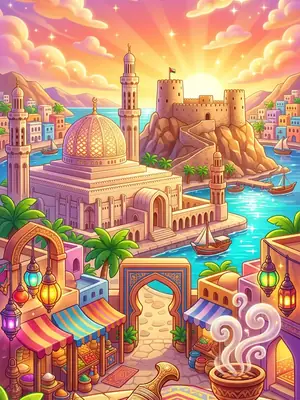
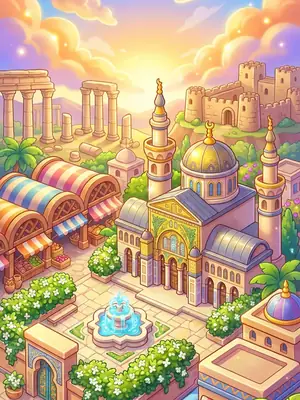
ChapterCapítulo 13
TehranTeherán → DamascusDamasco
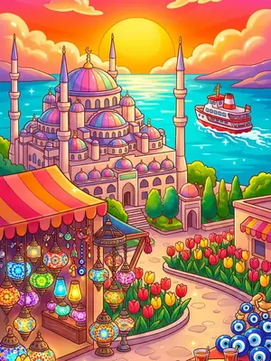
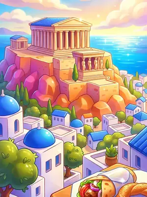
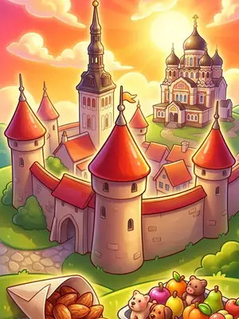
ChapterCapítulo 14
IstanbulEstambul → ReykjavikReikiavik
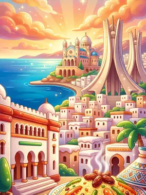
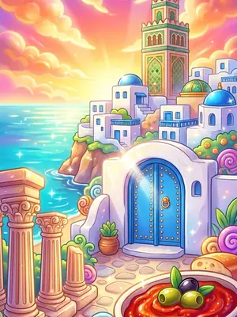
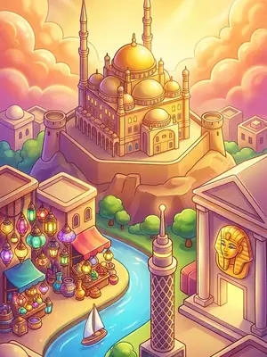
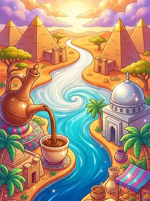
ChapterCapítulo 15
AlgiersArgel → KhartoumJartum
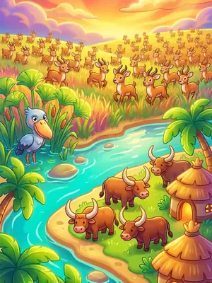
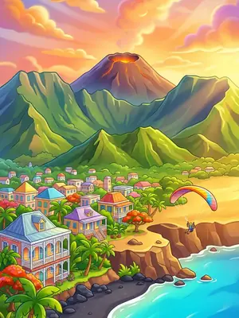
ChapterCapítulo 16
JubaYuba → Saint-DenisSaint-Denis
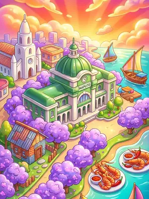
ChapterCapítulo 17
MaputoMaputo → WindhoekWindhoek
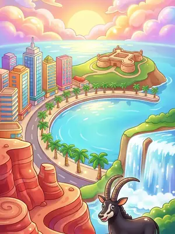
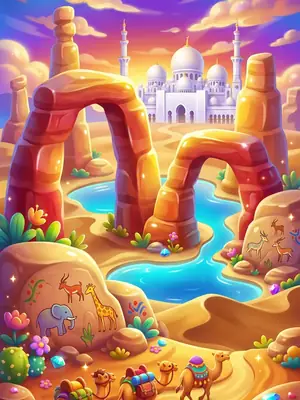
ChapterCapítulo 18
LuandaLuanda → MalaboMalabo
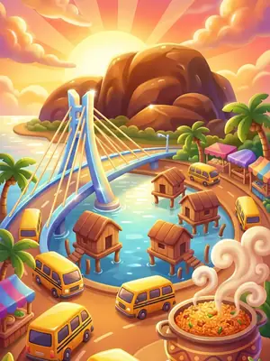
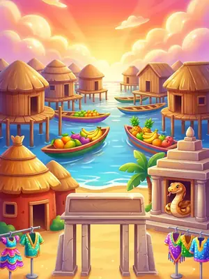
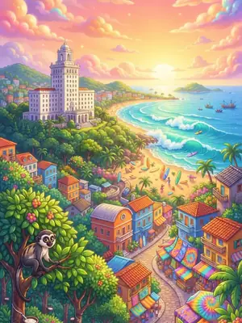
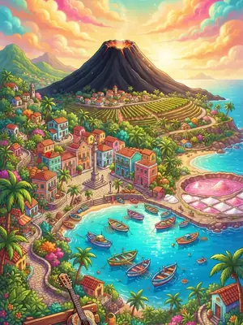
ChapterCapítulo 19
LagosLagos → PraiaPraia
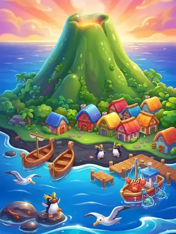
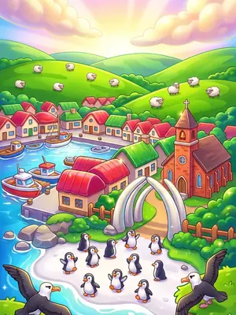
ChapterCapítulo 20
Edinburgh of the Seven SeasEdimburgo de los Siete Mares → StanleyPuerto Argentino
Collect them allColeccionalos
Reach a landmark's city and it joins your collection, with a short real story. Each one is also a Game Center achievement on iPhone.Llegá a la ciudad de un monumento y se suma a tu colección, con una breve historia real. Cada uno es además un logro de Game Center en iPhone.
StopParada 6 · Rio de JaneiroRío de Janeiro
Christ the Redeemer has watched over Rio de Janeiro from the top of Corcovado mountain since 1931. The statue is 30 meters tall, its open arms span 28 meters, and its skin is a mosaic of thousands of small soapstone tiles. In 2007 it was named one of the New Seven Wonders of the World.Desde 1931, el Cristo Redentor vela por Río de Janeiro desde lo alto del cerro del Corcovado. La estatua mide 30 metros de altura, sus brazos abiertos se extienden 28 metros y su superficie es un mosaico de miles de pequeñas teselas de piedra jabón. En 2007 fue elegido una de las Nuevas Siete Maravillas del Mundo.
StopParada 46 · Chichen ItzaChichén Itzá
The great pyramid of Chichen Itza, called El Castillo, is a calendar in stone: its four stairways of 91 steps plus the platform on top add up to 365, one for each day of the year. At the spring and autumn equinoxes, the setting sun draws a shadow serpent slithering down its northern stairs.La gran pirámide de Chichén Itzá, llamada El Castillo, es un calendario de piedra: sus cuatro escalinatas de 91 escalones más la plataforma superior suman 365, uno por cada día del año. En los equinoccios de primavera y otoño, el sol poniente dibuja una serpiente de sombra que se desliza por su escalinata norte.
StopParada 49 · New YorkNueva York
A gift from the people of France, the Statue of Liberty crossed the Atlantic in 350 pieces and was unveiled in 1886. Her copper skin, no thicker than two coins, was shiny brown at first and slowly turned green over the following decades. Counting the pedestal, her torch rises 93 meters above the harbor.Regalo del pueblo de Francia, la Estatua de la Libertad cruzó el Atlántico en 350 piezas y fue inaugurada en 1886. Su piel de cobre, no más gruesa que dos monedas, al principio era de un marrón brillante y con las décadas se fue volviendo verde poco a poco. Contando el pedestal, su antorcha se alza 93 metros sobre el puerto.
StopParada 55 · TokyoTokio
At 3,776 meters, Mount Fuji is the highest mountain in Japan, a volcano that last erupted in 1707. On clear days it can be seen from Tokyo, about 100 kilometers away, and every summer hundreds of thousands of people climb it to watch the sunrise from the top.Con 3776 metros, el monte Fuji es la montaña más alta de Japón, un volcán que entró en erupción por última vez en 1707. En los días despejados se puede ver desde Tokio, a unos 100 kilómetros, y cada verano cientos de miles de personas lo escalan para ver el amanecer desde la cima.
StopParada 56 · KyotoKioto
Behind the shrine of Fushimi Inari, thousands of vermilion torii gates climb the wooded slope of Mount Inari, each one donated by a family or a business in thanks for good fortune. The path runs for about four kilometers, and the stone foxes along it are the messengers of Inari, the deity of rice and prosperity.Detrás del santuario de Fushimi Inari, miles de puertas torii de color bermellón suben por la ladera boscosa del monte Inari, cada una donada por una familia o un negocio en agradecimiento por la buena fortuna. El sendero recorre unos cuatro kilómetros, y los zorros de piedra que lo bordean son los mensajeros de Inari, la deidad del arroz y la prosperidad.
StopParada 57 · MiyajimaMiyajima
Built in 1407 on a hill above the famous floating shrine of Miyajima, this vermilion pagoda rises 27 meters over the island. Its five roofs are covered in layers of cypress bark, and from its terrace you can see the great red torii gate standing in the sea.Construida en 1407 en una colina sobre el famoso santuario flotante de Miyajima, esta pagoda bermellón se alza 27 metros sobre la isla. Sus cinco tejados están cubiertos con capas de corteza de ciprés, y desde su terraza se ve la gran puerta torii roja que se levanta en el mar.
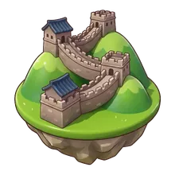
StopParada 61 · BeijingPekín
The Great Wall of China is not one wall but many, built and rebuilt by different dynasties over some 2,000 years to guard the northern frontier. Counting all its branches it stretches more than 21,000 kilometers, and the best-preserved stretches near Beijing were built under the Ming dynasty, about 500 years ago.La Gran Muralla China no es una sola muralla sino muchas, construidas y reconstruidas por distintas dinastías a lo largo de unos 2000 años para proteger la frontera norte. Contando todos sus ramales, se extiende por más de 21 000 kilómetros, y los tramos mejor conservados, cerca de Pekín, se construyeron bajo la dinastía Ming, hace unos 500 años.
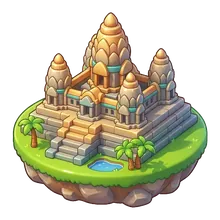
StopParada 72 · Siem ReapSiem Reap
Built in the 12th century for King Suryavarman II, Angkor Wat is the largest religious monument in the world. Its five towers are shaped like lotus buds and stand for the peaks of Mount Meru, home of the gods, and the whole temple is surrounded by a moat almost 200 meters wide.Construido en el siglo XII para el rey Suryavarman II, Angkor Wat es el monumento religioso más grande del mundo. Sus cinco torres tienen forma de capullo de loto y representan las cumbres del monte Meru, morada de los dioses, y todo el templo está rodeado por un foso de casi 200 metros de ancho.
StopParada 84 · SydneySídney
The sail-shaped roofs of the Sydney Opera House are covered in more than a million white and cream tiles that wash themselves clean when it rains. Its Danish architect, Jørn Utzon, won the design competition in 1957, and the building opened in 1973 after fourteen years of work.Los techos en forma de vela de la Ópera de Sídney están cubiertos por más de un millón de azulejos blancos y color crema que se limpian solos cuando llueve. Su arquitecto danés, Jørn Utzon, ganó el concurso de diseño en 1957, y el edificio se inauguró en 1973, tras catorce años de obras.
StopParada 88 · UluruUluru
Uluru rises 348 meters above the flat red desert of central Australia, and much more of the rock lies hidden underground. It is sacred to the Anangu people, its traditional owners, and at sunrise and sunset its surface glows from orange to deep red.Uluru se eleva 348 metros sobre el desierto rojo y llano del centro de Australia, y una parte mucho mayor de la roca permanece oculta bajo tierra. Es sagrado para el pueblo anangu, sus dueños tradicionales, y al amanecer y al atardecer su superficie brilla del naranja al rojo intenso.
StopParada 104 · AgraAgra
Emperor Shah Jahan built the Taj Mahal in memory of his wife Mumtaz Mahal, and some 20,000 workers spent around twenty years finishing it. Its white marble is inlaid with precious stones and changes color with the light, looking pink at dawn, white at noon and golden under the moon.El emperador Shah Jahan construyó el Taj Mahal en memoria de su esposa Mumtaz Mahal, y unos 20 000 obreros tardaron cerca de veinte años en terminarlo. Su mármol blanco tiene incrustaciones de piedras preciosas y cambia de color con la luz: se ve rosado al amanecer, blanco al mediodía y dorado bajo la luna.
StopParada 130 · DubaiDubái
At 828 meters, the Burj Khalifa has been the tallest building in the world since it opened in 2010. Its shape was inspired by a desert flower, and it is so tall that the sun sets a few minutes later at the top than it does at its base.Con 828 metros, el Burj Khalifa es el edificio más alto del mundo desde su inauguración en 2010. Su forma se inspiró en una flor del desierto, y es tan alto que en la cima el sol se pone unos minutos más tarde que en la base.
StopParada 134 · PetraPetra
The Treasury of Petra was carved straight out of a rose-colored cliff by the Nabataeans about 2,000 years ago, probably as the tomb of a king. Visitors reach it through the Siq, a narrow canyon more than a kilometer long, and its 40-meter facade appears suddenly at the very end.El Tesoro de Petra fue tallado directamente en un acantilado de color rosado por los nabateos hace unos 2000 años, probablemente como tumba de un rey. Los visitantes llegan a él por el Siq, un estrecho cañón de más de un kilómetro de largo, y su fachada de 40 metros aparece de repente justo al final.
StopParada 139 · IstanbulEstambul
Hagia Sophia was completed in the year 537 for the Byzantine emperor Justinian, and for almost a thousand years its great dome was the largest in the world. It has been a cathedral, a mosque and a museum, and its walls still show Christian mosaics beside Arabic calligraphy.Santa Sofía se terminó en el año 537 para el emperador bizantino Justiniano, y durante casi mil años su gran cúpula fue la más grande del mundo. Ha sido catedral, mezquita y museo, y sus muros todavía muestran mosaicos cristianos junto a caligrafía árabe.
StopParada 140 · AthensAtenas
The Parthenon was completed in 438 BC on the Acropolis of Athens as a temple to the goddess Athena. Its builders made the columns lean slightly inward and the floor curve gently upward, so that from a distance the whole temple would look perfectly straight.El Partenón se terminó en el 438 a. C. en la Acrópolis de Atenas como templo dedicado a la diosa Atenea. Sus constructores inclinaron levemente las columnas hacia adentro y curvaron suavemente el piso hacia arriba, para que, desde lejos, todo el templo se viera perfectamente recto.
StopParada 161 · MoscowMoscú
Ivan the Terrible ordered Saint Basil's Cathedral to celebrate a military victory in 1552, and it was finished in 1561. Under its colorful onion domes there is not one church but ten small ones, linked by narrow painted corridors. It stands at the edge of Red Square, in the heart of Moscow.Iván el Terrible mandó construir la Catedral de San Basilio para celebrar una victoria militar en 1552, y se terminó en 1561. Bajo sus coloridas cúpulas en forma de cebolla no hay una sola iglesia, sino diez pequeñas, unidas por estrechos pasillos pintados. Se alza en el borde de la Plaza Roja, en el corazón de Moscú.
StopParada 168 · BerlinBerlín
The Brandenburg Gate was completed in 1791, and the statue on top shows the goddess of victory driving a chariot pulled by four horses. For almost thirty years it stood right beside the Berlin Wall, and when the wall fell in 1989 it became the symbol of a reunited Germany.La Puerta de Brandeburgo se terminó en 1791, y la estatua que la corona muestra a la diosa de la victoria conduciendo un carro tirado por cuatro caballos. Durante casi treinta años estuvo justo al lado del Muro de Berlín, y cuando el muro cayó en 1989 se convirtió en el símbolo de una Alemania reunificada.
StopParada 172 · ParisParís
Built of wrought iron for the 1889 World's Fair, the Eiffel Tower was only meant to stand for twenty years. At 330 meters it was the tallest structure in the world until 1930, and every seven years painters give its 18,000 iron parts a fresh coat by hand.Construida en hierro forjado para la Exposición Universal de 1889, la Torre Eiffel solo debía mantenerse en pie veinte años. Con 330 metros, fue la estructura más alta del mundo hasta 1930, y cada siete años un equipo de pintores repinta a mano sus 18 000 piezas de hierro.
StopParada 176 · PisaPisa
The bell tower of Pisa's cathedral began to lean while it was still being built in the 12th century, because the soft ground beneath it gave way. Work stopped and started again over almost two centuries. Engineers have since straightened it a little, and today it leans about four degrees.El campanario de la catedral de Pisa empezó a inclinarse cuando todavía se estaba construyendo, en el siglo XII, porque el suelo blando que tenía debajo cedió. Las obras se detuvieron y se reanudaron a lo largo de casi dos siglos. Desde entonces, los ingenieros lo han enderezado un poco, y hoy se inclina unos cuatro grados.
StopParada 178 · RomeRoma
Opened in the year 80, the Colosseum could seat around 50,000 spectators, who came to watch gladiators and wild animal hunts. A huge canvas awning shaded the crowd, and beneath the arena a maze of tunnels and lifts raised animals and scenery up onto the sand.Inaugurado en el año 80, el Coliseo tenía capacidad para unos 50 000 espectadores, que acudían a ver gladiadores y cacerías de animales salvajes. Un enorme toldo de lona daba sombra al público, y bajo el piso del anfiteatro, un laberinto de túneles y elevadores subía animales y escenografía hasta la arena.
StopParada 185 · LondonLondres
Big Ben is really the name of the great bell inside the clock tower of the Palace of Westminster, renamed the Elizabeth Tower in 2012. The bell weighs more than 13 tonnes, and the clock is kept on time by adding or removing old penny coins on its pendulum.Big Ben es en realidad el nombre de la gran campana que hay dentro de la torre del reloj del Palacio de Westminster, que en 2012 pasó a llamarse Torre Isabel. La campana pesa más de 13 toneladas, y para que el reloj marque la hora exacta se añaden o se quitan viejas monedas de un penique en su péndulo.
StopParada 194 · GizaGuiza
For nearly 4,000 years the Great Pyramid of Giza was the tallest building on Earth. It was raised for the pharaoh Khufu about 4,500 years ago from more than two million stone blocks, and it is the only one of the Seven Wonders of the Ancient World still standing.Durante casi 4000 años, la Gran Pirámide de Guiza fue el edificio más alto de la Tierra. Se levantó para el faraón Keops hace unos 4500 años con más de dos millones de bloques de piedra, y es la única de las siete maravillas del mundo antiguo que sigue en pie.
StopParada 196 · AswanAsuán
Pharaoh Ramesses II had the great temple of Abu Simbel carved into a sandstone cliff more than 3,200 years ago, guarded by four statues of himself 20 meters tall. In the 1960s, to save it from the waters of a new dam, the whole temple was cut into blocks and rebuilt on higher ground.El faraón Ramsés II mandó tallar el gran templo de Abu Simbel en un acantilado de arenisca hace más de 3200 años, custodiado por cuatro estatuas de sí mismo de 20 metros de altura. En la década de 1960, para salvarlo de las aguas de una nueva represa, todo el templo se cortó en bloques y se reconstruyó en un terreno más alto.
FAQ
It starts in Montevideo, Uruguay, goes round the whole world through 20 chapters and ends in Stanley (Islas Malvinas), back on the same side of the Atlantic, after 255 stops.Empieza en Montevideo, Uruguay, da la vuelta al mundo entero en 20 capítulos y termina en Puerto Argentino (Islas Malvinas), otra vez del mismo lado del Atlántico, después de 255 paradas.
Twelve. Each level paints a piece of the city's postcard; finish all twelve to complete it, stamp your passport and travel on by plane, ferry, bus or train. That makes 3,060 levels in all.Doce. Cada nivel pinta un pedazo de la postal de la ciudad; terminá los doce para completarla, sellar el pasaporte y seguir viaje en avión, ferry, bus o tren. En total son 3,060 niveles.
Yes. Stops unlock in order, so this map always shows where your trip goes next.Sí. Las paradas se desbloquean en orden, así que este mapa siempre te muestra a dónde sigue tu viaje.
Yes. Every stop is a real city, island or region at its real place on the map, and its tiles show what you would find there: food, animals, crafts and monuments.Sí. Cada parada es una ciudad, isla o región real, en su lugar real del mapa, y sus fichas muestran lo que encontrarías allí: comidas, animales, artesanías y monumentos.
23 famous landmarks wait along the route, from the Eiffel Tower to the Great Wall. Reach their city to collect them, each with a short real story.En la ruta te esperan 23 monumentos famosos, de la Torre Eiffel a la Gran Muralla. Llegá a su ciudad para coleccionarlos, cada uno con una breve historia real.
Free on iPhone and AndroidGratis en iPhone y Android
Download Trip Sort and match your way round all 255 stops. No account, no sign-up, no Wi-Fi needed.Descargá Trip Sort y emparejá fichas por las 255 paradas. Sin cuenta, sin registro y sin wifi.
Free to play with optional in-app purchases and ads. Remove Ads is a single purchase.Gratis, con compras opcionales y anuncios. Quitar anuncios es una sola compra.